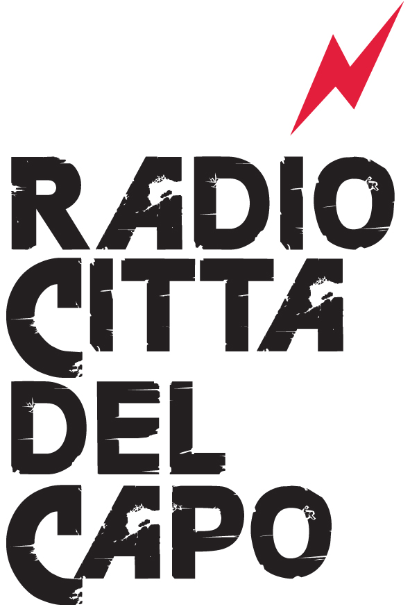

Radio Città
del Capo
Dal 12 ottobre 1987 al 3 maggio 2021 Radio Città del Capo ha trasmesso da Bologna sui 96,250 MHz. Qui sono raccolti le sue voci, il suo giornale e i nomi di chi l'ha fatta.
I loghi
dal più antico
La storia
Sette capitoli che seguono le fasi della cronologia. I testi sono provvisori; la cronologia in fondo alla pagina è completa.
Testo segnaposto: i capitoli verranno sostituiti con il testo definitivo.
Cronologia
Audio
Trasmissioni, speciali e documenti sonori della radio. Ogni registrazione si ascolta direttamente dalla pagina.
Video
Filmati sulla radio e dalla radio, ospitati su altre piattaforme.
Novantaseietre
Il giornale della radio, spedito agli abbonati e distribuito in città. Direttore responsabile Stefano Benni, registrazione al Tribunale di Bologna n. 6059 del 20 gennaio 1992. Dieci numeri, dal numero zero al 1999.
Immagini
Foto e disegni ritagliati dai numeri del giornale. Ogni immagine riporta il numero e la pagina da cui viene. Locandine e rassegna stampa si aggiungeranno qui.
Persone
Chi compare nei palinsesti, chi ha firmato articoli, disegni e foto di Novantaseietre e chi lo ha fatto. In ordine di cognome; accanto a ogni nome, le trasmissioni con i periodi in cui erano in onda.
Programmi
Tutte le trasmissioni che compaiono nei palinsesti pubblicati da Novantaseietre, con giorno, ora e conduttori di ogni stagione.
Palinsesti
La settimana di Radio Città del Capo come la pubblicava il giornale. Sopra gli appuntamenti di tutti i giorni, sotto la settimana giorno per giorno.